Introduction to Algorithms

Neelam Akula
Spring 2021
Introduction to Algorithms

Neelam Akula
Spring 2021
Last Updated: March 25, 2021
_____________________________________________________________________
Given an array of numbers (either positive or negative), we wish to calculate the subset
of consecutive numbers whose sum is largest.
From our algorithm above we can get the following analysis for it’s complexity.
| ∑ i=1n ∑ j=in ∑ k=ij1 | = ∑ i=1n ∑ j=inj - i + 1 | ||
| = ∑ i=1n ∑ j=1n-i+1j | |||
| = ∑ i=1n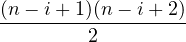 | |||
=  ∑
i=1n(n - i + 1)(n - i + 2) ∑
i=1n(n - i + 1)(n - i + 2) | |||
=  ∑
n-i+1=1ni(i + 1) ∑
n-i+1=1ni(i + 1) | |||
=  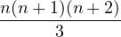 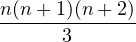 |
From this, we can see this first version of our algorithm is Θ(n3) or cubic time.
We then use sums to analyze this algorithm.
| ∑ i=1n ∑ j=in1 | = ∑ i=1nn - i + 1 | ||
| = ∑ i=1ni | |||
| = 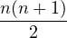 |
So this more efficient version is Θ(n2) or quadratic time.
Using dynamic programming we can improve on this algorithm even further. Conceptually, the maximum sum is just the previous maximum sum plus the current value.
It follows that this algorithm is Θ(n) or linear time. Correctness of this algorithm stems from proof by induction on S ←max(S + A[i],0), as this is the loop invariant.
_____________________________________________________________________
Bubble Sort is designed in such a manner such that the state of the array to be listed does not change the number of comparisons it makes.
| ∑ i=2n ∑ j=1i-11 | = ∑ i=2ni - 1 | ||
| = ∑ i=1n-1i | |||
| = 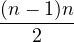 = ( n 2) |
Worst case is when the list is reverse sorted, there will be the same number of exchanges as comparisons.
Best case is when the list is already sorted, in which there will be zero exchanges.
To find the average case we must count the transpositions (two elements that are out of order related to one another). In best case there are no transpositions, and in worst case there are 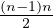 transpositions. In a randomly permuated array each element is equally likely to be out of order so the total number of average case exchanges is half the comparisons.
_____________________________________________________________________
Worst case is when the array is reverse sorted, and every element must be moved. The while loop always decrements j to zero to compare against the sentinel value.
Best case is when the array is already sorted, there is only one comparison for each iteration of the for loop.
For average case we have to determine the probability that a given element will move. So we want the expected value of ∑ x∈XP(x)V (x), where P(x) is the probability that an element will end up a location and V (x) is the number of moves.
| ∑ x∈XP(x)V (x) | = ∑
i=2n ∑
j=1i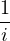 ⋅ (i - j + 1) = ∑
i=2n ∑
j=1i(i - j + 1) ∑
j=1i(i - j + 1) | ||
= ∑
i=2n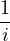∑
j=1ij = ∑
i=2n ⋅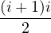 ⋅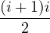 | |||
= ∑
i=2n = =  ∑
i=2ni + 1 ∑
i=2ni + 1 | |||
=  ∑
i=1ni - 1 + (n - 1) ∑
i=1ni - 1 + (n - 1) | |||
=  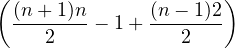 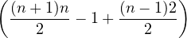 | |||
| = 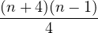 |
Worst case is two moves for each iteration of outer loop plus worst case number of comparisons, minus the time when the comparison is false at the end. A shortcut of this is at each iteration we do one more move than comparison, so take the value we got above and add the number of loop iterations.
Best case is one initial move in the assignment on line 1 and then two moves during each iteration of the for loop. So we get,
Average case is whenever there is a comparison there is a move except for the single instance in each iteration of when it evaluates to false. Thus the analysis method is the same as worst case.
_____________________________________________________________________
Worst case is when the array is reverse sorted, and every ith iteration of the loop must compare against all previous (i - 1) elements.
| ∑ i=2n ∑ j-1i-11 | = ∑ i=2n(i - 1) = ∑ i=2ni -∑ i=2n1 | ||
| = 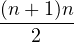 - (1 - (n - 1)) | |||
| = 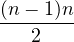 |
Best case is when the array is already sorted, so there will just be 1 comparison per iteration of the outermost loop. (Same as Insertion Sort with Sentinel.)
On average, the sentinel costs ∑ i=2n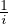 comparisons. This is simply just the Harmonic Series. In other words, the sentinel costs Hn - 1 comparisons, so Insertion Sort without Sentinel is
Removing the sentinel adds no new exchanges so the best, worst, and average cases are all the same as Insertion Sort with Sentinel.
_____________________________________________________________________
The number of comparisons is constant regardless of the state of the array.
Selection sort only performs one exchange per each iteration of the outermost loop, so there is a total of n - 1 exchanges.
_____________________________________________________________________
Best case, we only do n comparisons (this is when An < B1 or Bn < A1). Worst case is 2n- 1 comparisons (this is when An and Bn are the two largest elements). The average case is 2n - 2 + 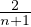.
Let subarray A be of size m and subarray B be of size n where m ≤ n. Best case is m comparisons (this is when Am < B1). Worst case is m + n - 1 (this is when Am and Bn are the two largest elements). When m is much smaller than n there are better algorithms we can use. For m = 1 binary search gives ≈ lg n.
Merging is not in place. It can be implemented in place but those algorithms are not practical.
We will analyze mergesort using the tree method, along with the assumption that n is a power of 2.
We can notice that each level does exactly 2
| = | |||
| = | |||
= ( | |||
| = ( | |||
| = |
As a recurrence,
| = | |||
= 2 + + |
_____________________________________________________________________
 Create Heap
Create Heap  Finish Sort
Finish Sort 
A Heap is a binary tree where every value is larger than its children. Equivalently its descendants. For the purposes of this class will we require that all binary trees are full binary trees.
The traditional way of creating a heap is to insert at the end of the array and sift up. Robert Floyd created a better algorithm for creating the heap. Treat the tree as a recursive heap: each parent is the parent of 2 heaps, and sift from the bottom up. Create heap on left, create heap on right, then sift root down, and move up a level.
In a binary tree, most nodes are near the bottom, so when doing the bottom up technique, most of the work is done at the bottom. The number of comparisons can be calculated like so,
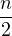  | = | ||
| = |
Note that 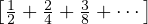 can be written as so,
 + +  + +  + +  | = 1 | ||
 + +  + +  | =  | ||
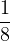 +  | =  |
Which all together becomes
After heap creation we then sort it,
Each level has two comparisons, child and temporary. There are
| | |||
= 2[lg 1 + lg 2 + lg 3 +  + lg + lg | |||
= 2lg(1  | |||
| = 2lg( | |||
| = 2lg 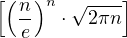 | |||
| = 2 | |||
| = 2 |
From this we see that even while the tree shrinks, it does not shrink fast enough to
make some notable difference. We are still doing 2
Node has index
The first parent is at index 
To finish the sort we push bottom into tmp first, then move heap root into the bottom most spot.
As Heapsort stands, the result is worse than merge sort. Θ(2
_____________________________________________________________________
As you would expect, the time to add two
If we were attempting to determine if a number was prime we would divide it by
consectutive primes up to the quare root of that number. In Computer Science we want
to approach all problems in terms of the problem size. So we should look at both in tmers
of the
The elementary approach to multiplication runs in Θ(
By memorizing numbers in large bases, say base 100, 2-digit decimal numbers
can be treated as 1-digit numbers in base 100. That makes the multiplication
easier, because there will be fewer steps. To generalize this for
Say we want to multiply two 2-digit numbers,
Now to calculate the total number of atomic actions,
| = | |||
= 2 | |||
= 2 | |||
= 2 | |||
| = 2 | |||
= 2 + + | |||
= 2 + + | |||
= 2 + + |
So we see that with this method we are doing
_____________________________________________________________________
The worst case is when the pivot is either in the
As a recurrence,
| = | |||
=  |
As a recurrence,
| = 2 | |||
| = |
Note: This is the same recurrence as Mergesort!
As a recurrence,
=  + + |
Solve with Strong Constructive Induction.
Guess:
Base case
Inductive Hypothesis: Assume true for
Inductive Step:
=  + + | |||
 lg + lg + | |||
 + +  + + | |||
| | |||
| | |||
| | |||
| |
It follows that we need
As a recurrence,
| = + | |||
=   | |||
=  | |||
=   | |||
| = |
=  + + | |||
=  + + |
Solve with Strong Constructive Induction.
Guess:
Base case
Inductive Hypothesis: Assume true for
Inductive Step:
| = | |||
=  | |||
| | |||
| | |||
=   | |||
=  | |||
| = |
It follows that we need
Let

| = | |||
| = 2 | |||
| = 2 | |||
| = 2 | |||
= 2( + + | |||
| = 2 | |||
| = 2(( | |||
| = 2( |
Recall the Quicksort procedure,
When executing quicksort(
The left table represents the pivot being the largest element, and the right table represents the pivot being the smallest element.
| ( | ____(2 |
|||
| ( | ____(3 |
|||
| ( | ____(4 |
|||
 |  |  |  |
|
| (4 | ________( |
|||
| (3 | _____( |
|||
When the pivot is the smallest element the stack remains very small but if the pivot is
the largest element we stack
On average, height of the stack for Quicksort is Θ(log
A more technical definition is; An algorithm is
We can modify the Quicksort procedure so that stack has height at most lg
Quicksort is in place, but it does not use a constant amount of extra space. Quicksort uses slightly more than a constant amount of extra space.
It is risky to pivot on the last element because the last element could be the largest element. Some better ways could be;
There are a variety of partition routines. The current edition of the textbook has a
version that uses
_____________________________________________________________________
Temporal locality is dependent on how many variables you have and often you have to replace them.
The above program has good temporal locality if there are three registers, but bad temporal locality if there are only two registers (there are three unique variables in the program above so anything with less than three avaliable registers will have bad temporal locality).
If a particular storage location is referenced at a particular time, then it is likely that nearby memory locations will be referenced in the near future. In this case it is common to attempt to guess the size and shape of the area around the current reference for what it is worthwhile to prepare faster access for subsequent reference.
| Algorithm | Worst Comp. | Avg. Comp. | Worst Moves | Avg. Moves | Worst Exch. | Avg. Exch. | In Place | Spatial Locality |
| Bubble Sort | | | | | Yes | Yes | ||
| Insertion Sort | | | | | Yes | Yes | ||
| Selection Sort | | | | | Yes | Yes | ||
| Mergesort | | | ? | ? | Y/N | Yes | ||
| Heapsort | ” | | ” | | Yes | No | ||
| Quicksort | | 1 | ? | ? | Yes | Yes |